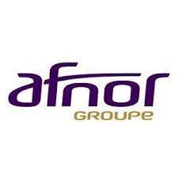

Hôpital Saint-Joseph : établissement hospitalier privé à but non lucratif situé à Paris, reconnu pour la qualité de ses soins, ses services médicaux spécialisés et son engagement dans l’innovation et la formation.

Groupe AFNOR : organisme français de référence dans la normalisation, la certification et la formation, accompagnant les entreprises et institutions dans l’amélioration de la qualité, de la performance et de la conformité aux normes.